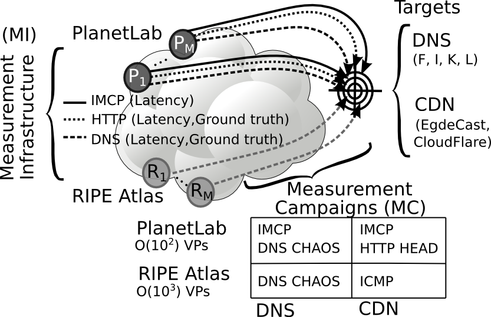

Anycast Datasets
In this page you can find two kinds of datasets:
- Datasets with ground truth, collected with protocol specific techniques (e.g., DNS CHAOS requests or DPI over HTTP headers) for a restrained set of providers, that we used to validate the iGreedy code
- Internet-wide censuses without groundtruth, collected solely based on ICMP latency measurement and processed with the scalable iGreedy code (not yet publicly available)
Dataset with ground truth
These datasets (and code) were used to obtain results in [INFOCOM-15] and [JSAC-16], and collected as schematized in the following picture (see the publication section for details)

To make results fully reproducible, the datasets are directly available in the iGreedy code
IPv4 Censues
Starting in March 2015, we have performed Internet-wide censuses of IPv4 anycast deployment at /24 level [CoNEXT-15], which we make available to the community as
- The list of anycast IP/24 belonging to the top-100 ASes
- A nice illustration of the top-100 anycast ASes

Since December 2015, we have started running monthly censuses, that we describe in [SIGCOMM-CCR-17]. In this page, we host one year worth of data, making available
- the raw measurement from PlanetLab,
- the set of raw mesurement for targets that were found to be Anycast, as well as
- the list of anycast /24 for every month.
- the IDs of the public RIPE Atlas measurements we used in [SIGCOMM-CCR-17] for the year-long tracking as well as the monthly refinement
| Month | Raw measurement data | Processed data | |
|---|---|---|---|
| All | Anycast | Anycast List | |
| 2016-06 | 2016-06 [2.3GB] |
2016-06 [2.2MB] |
2016-06 [52KB] |
| 2016-07 | 2016-07 [21GB] |
2016-07 [3.0MB] |
2016-07 [52KB] |
| 2016-08 | 2016-08 [4.0GB] |
2016-08 [2.0MB] |
2016-08 [48KB] |
| 2016-09 | 2016-09 [7.9GB] |
2016-09 [2.2MB] |
2016-09 [52KB] |
| 2016-10 | 2016-10 [4.3GB] |
2016-10 [2.1MB] |
2016-10 [52KB] |
| 2016-11 | 2016-11 [4.0GB] |
n/a | 2016-11 [48KB] |
| 2016-12 | 2016-12 [3.2GB] |
n/a | 2016-12 [52KB] |
| 2017-01 | 2017-01 [3.6GB] |
2017-01 [1.8MB] |
2017-01 [52KB] |
| 2017-02 | 2017-02 [1.8GB] |
2017-02 [1.7MB] |
2017-02 [52KB] |
| 2017-03 | 2017-03 [1.7GB] |
2017-03 [1.6MB] |
2017-03 [52KB] |
| 2017-04 | 2017-04 [3.1GB] |
2017-04 [3.0MB] |
2017-04 [56KB] |